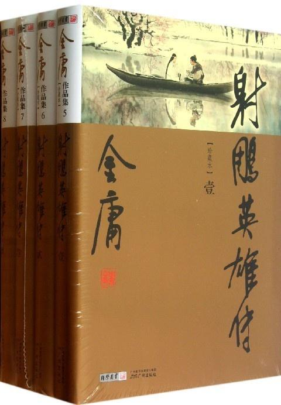
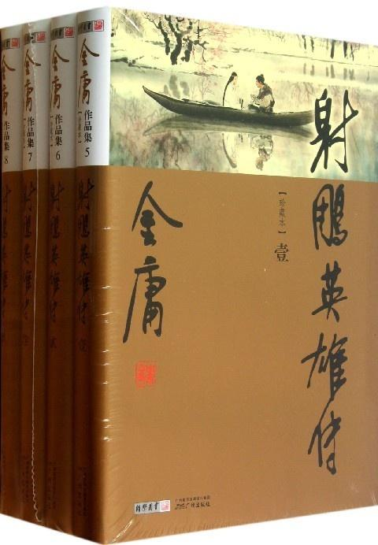

关于此网站
本网站致力于为每一个爱书人士推出能激励个人成长的好书！只有当一本书提供了精神成长、工作技能的提升，才会被我们所推荐！读书的益处:
1. 读书可以增加谈吐深度2.读书可以保持大脑的活跃
3.读书可以使人抵抗孤独
4.读书可以释放压力
5.读书使人明智
小组信息
学院：经贸学院班级：17电子商务B2班
小组：“高尔基”小组
射雕英雄传
《射雕英雄传》是金庸创作的长篇武侠小说，创作于1957～1959年，是金庸“射雕三部曲”的第一部。
《射雕英雄传》以宁宗庆元五年（1199年）至成吉思汗逝世（1227年）这段历史为背景，反映了南宋抵抗金国与蒙古两大强敌的斗争，充满爱国的民族主义情愫。
该小说历史背景突出，场景纷繁，气势宏伟，具有鲜明的“英雄史诗”风格；在人物创造与情节安排上，它打破了传统武侠小说一味传奇，将人物作为情节附庸的模式，坚持以创造个性化的人物形象为中心，坚持人物统帅故事，按照人物性格的发展需要及其内在可能性、必然性来设置情节，从而使这部小说达到了事虽奇人却真的妙境。
侠之大者，为国为民，不外如是也。
《射雕英雄传》以宁宗庆元五年（1199年）至成吉思汗逝世（1227年）这段历史为背景，反映了南宋抵抗金国与蒙古两大强敌的斗争，充满爱国的民族主义情愫。
该小说历史背景突出，场景纷繁，气势宏伟，具有鲜明的“英雄史诗”风格；在人物创造与情节安排上，它打破了传统武侠小说一味传奇，将人物作为情节附庸的模式，坚持以创造个性化的人物形象为中心，坚持人物统帅故事，按照人物性格的发展需要及其内在可能性、必然性来设置情节，从而使这部小说达到了事虽奇人却真的妙境。
侠之大者，为国为民，不外如是也。
关于书籍的格言
为乐趣而读书。 —— 毛姆 读书之法，在循序而渐进，熟读而精思。 —— 朱熹
读书使人心明眼亮。 —— 伏尔泰